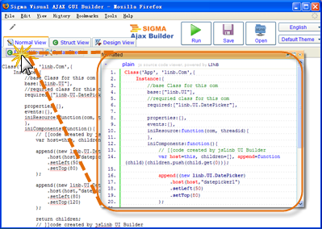

| Ajax Web Developer Manual |
Contents
|
Normal ViewNo matter how powerful and numerous Ajax Web Developer components are, you still have to write some codes to complete a usable web application. In fact, when you design your web page and lay your components by dragging and drop, Ajax Web Developer generates lots of codes to tell browsers how to create and initialize components. When you switch to [Normal View] , you will see it's really a typical code editor. You can enter and delete text, highlight text with the mouse, cut, copy, paste code within normal view, just the same way as you use some other text editor. One useful feature is syntax highlighting, which makes keywords, strings, numeric constants, and comments in different colors. Just click [Format View] to syntax highlight your code. The colorful codes look like the following figure.  Another feature is that Ajax Web Developer can help you to figure out whether there are any syntax errors in your code. If you are new to JavaScript, this feature enables you to find out what error you made. After you click [Syntax Check] , a message will drop down saying "Congratulations. No syntax error yet" or some hints about the errors, for example, "missing ) after argument list at line 5" .
|
|
All contents are (c) Copyright 2005 - 2008, Sigma Software
Inc. All rights Reserved |